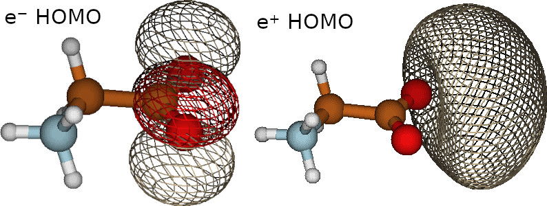
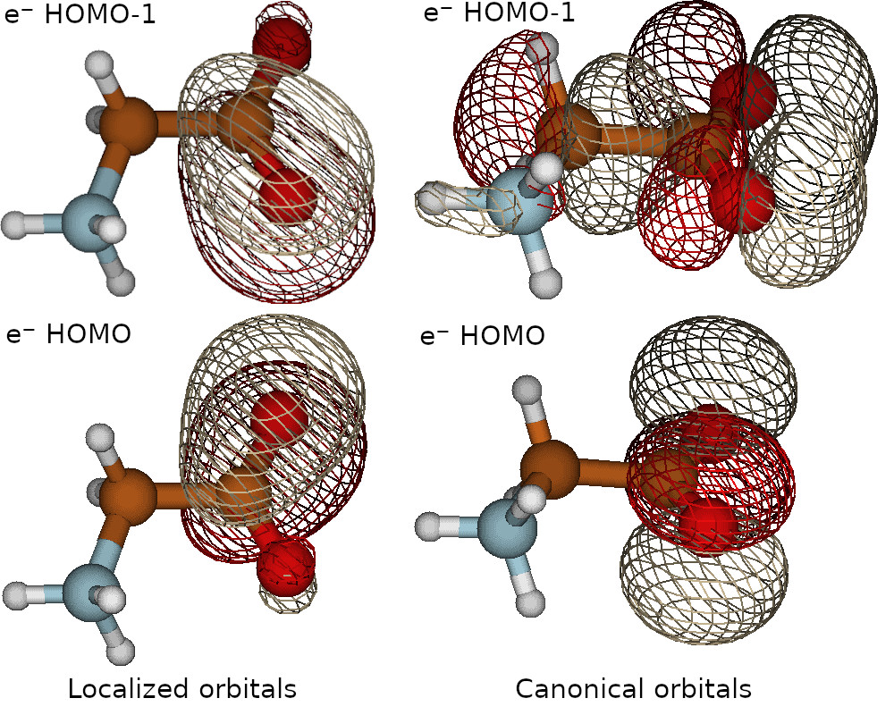
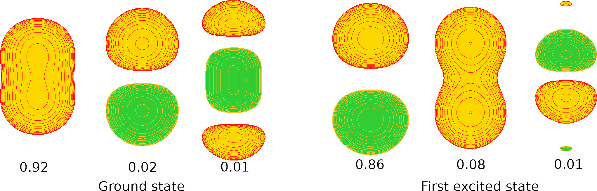

Molden examples
Running the following input of positronic glycine
SYSTEM_DESCRIPTION='Gly.e+-molden'
GEOMETRY
e-(N) 6-311G 0.851078 0.379034 0.538699
e-(C) 6-311G 0.011668 -0.714576 1.101899
e-(C) 6-311G 0.016098 -0.668656 2.636109
e-(O) 6-311G 0.714088 0.201754 3.154209
e-(O) 6-311G -0.685842 -1.520986 3.175689
e-(H) 6-311G 1.816418 0.263714 0.801099
e-(H) 6-311G 0.409998 -1.655016 0.751139
e-(H) 6-311G -0.992842 -0.593136 0.726189
e-(H) 6-311G 0.527967 1.271782 0.883152
e-(H) 6-311G 0.787819 0.376813 -0.469282
e+ PSX-TZ 0.714088 0.201754 3.154209
e+ PSX-TZ -0.685842 -1.520986 3.175689 addParticles=-1
N dirac 0.851078 0.379034 0.538699
C dirac 0.011668 -0.714576 1.101899
C dirac 0.016098 -0.668656 2.636109
O dirac 0.714088 0.201754 3.154209
O dirac -0.685842 -1.520986 3.175689
H dirac 1.816418 0.263714 0.801099
H dirac 0.409998 -1.655016 0.751139
H dirac -0.992842 -0.593136 0.726189
H dirac 0.527967 1.271782 0.883152
H dirac 0.787819 0.376813 -0.469282
END GEOMETRY
TASKS
method = "RHF"
END TASKS
OUTPUTS
moldenFile
END OUTPUTS
Produces two molden files, one for the electrons and one for the positron, their filenames are provided in the output.
--------------------------------------------------------
MOLDENFILE 1
for all species
FileName: Gly.e+-molden.E-.molden
FileName: Gly.e+-molden.E+.molden
--------------------------------------------------------
These files contain the the electronic and positronic orbitals. We can visualize these orbitals using the molden software (https://www.theochem.ru.nl/molden/ ), as observed in the following figure
{kind=link}
Localized orbitals and fchk files
Localized orbitals are generated with the Erkale software (https://github.com/susilehtola/erkale ), adding the following lines in the CONTROL block
SYSTEM_DESCRIPTION='Gly.e+-localize-molden'
GEOMETRY
e-(N) 6-311G 0.851078 0.379034 0.538699
e-(C) 6-311G 0.011668 -0.714576 1.101899
e-(C) 6-311G 0.016098 -0.668656 2.636109
e-(O) 6-311G 0.714088 0.201754 3.154209
e-(O) 6-311G -0.685842 -1.520986 3.175689
e-(H) 6-311G 1.816418 0.263714 0.801099
e-(H) 6-311G 0.409998 -1.655016 0.751139
e-(H) 6-311G -0.992842 -0.593136 0.726189
e-(H) 6-311G 0.527967 1.271782 0.883152
e-(H) 6-311G 0.787819 0.376813 -0.469282
e+ PSX-TZ 0.714088 0.201754 3.154209
e+ PSX-TZ -0.685842 -1.520986 3.175689 addParticles=-1
N dirac 0.851078 0.379034 0.538699
C dirac 0.011668 -0.714576 1.101899
C dirac 0.016098 -0.668656 2.636109
O dirac 0.714088 0.201754 3.154209
O dirac -0.685842 -1.520986 3.175689
H dirac 1.816418 0.263714 0.801099
H dirac 0.409998 -1.655016 0.751139
H dirac -0.992842 -0.593136 0.726189
H dirac 0.527967 1.271782 0.883152
H dirac 0.787819 0.376813 -0.469282
END GEOMETRY
TASKS
method = "RHF"
END TASKS
CONTROL
localizeOrbitals=.T.
erkaleLocalizationMethod="MU"
END CONTROL
OUTPUTS
moldenFile
END OUTPUTS
Here with “MU” we selected the Pipek-Mozay localization scheme using Mulliken charges. Check Erkale manual for a full list of the localization procedures available. To transfer the orbitals to Erkale, openLowdin generates fchk files. In the output, you will find the Erkale localization log.
--------------------------------------------------------
FCHKFILE 1
for all species
FileName: Gly.e+-localize-molden.E-.fchk
FileName: Gly.e+-localize-molden.E+.fchk
--------------------------------------------------------
ERKALE ORBITAL LOCALIZATION
==============================
ERKALE - Localization from Hel, serial version.
(c) Susi Lehtola, 2010-2016.
[...]
Localizing orbitals: 1 2 3 4 5 6 7 8 9 10 11 12 13 14 15 16 17 18 19 20
Initializing generalized Pipek-Mezey calculation with Mulliken charges... done.
Initialization of Pipek-Mezey took 0.00 s
iter J delta J <G,G>
1 1.154017e+01 1.517727e+00 1.174829e+00 0.00 s
2 1.274872e+01 1.208552e+00 1.673368e+00 0.00 s
[...]
89 1.576852e+01 7.696281e-09 5.667527e-09 0.00 s
Converged.
Localization done in 0.06 s.
For this example, the localization procedure only affects the electronic orbitals, because there is only a single positronic orbital. When localized orbitals are requested, openlowdin will generate the molden files with them. Check in the following figure a comparison between the non-localized (right) and localized (left) HOMO of positronic glycine
{kind=link}
CI excited states
When we run a configuration interaction calculation we can generate molden files for the excited states. For example, in the Positron covalent bond (e+H-H-.CISDTQ-DZ.lowdin) example we added “state=2” to get the natural orbitals of the first excited state. In the output of that calculation we find
We are printing molden files for the CI states!
--------------------------------------------------------
MOLDENFILE 1
for all species
FileName: e+H-H-.CISDTQ-DZ.E-ALPHA.molden
FileName: e+H-H-.CISDTQ-DZ.E-BETA.molden
FileName: e+H-H-.CISDTQ-DZ.E+.molden
--------------------------------------------------------
We are printing molden files for the CI states!
--------------------------------------------------------
MOLDENFILE 2
for all species
for excited state: 2
FileName: e+H-H-.CISDTQ-DZ.E-ALPHA-s2.molden
FileName: e+H-H-.CISDTQ-DZ.E-BETA-s2.molden
FileName: e+H-H-.CISDTQ-DZ.E+-s2.molden
--------------------------------------------------------
In the following figure we plot the positronic natural orbitals with the highest contributions to the ground (right) and first excited (left) states
{kind=link}